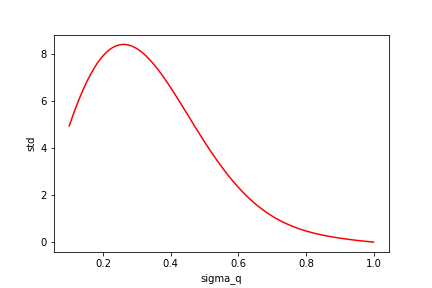

How bad can importance sampling be? Importance sampling is regularly used to estimate expectations or simply to reduce variance. In RL its also used to perform off-policy learning. If the approximating distribution used is poorly chosen, importance sampling can actually increase variance. In fact it’s known that the variance of the importance weights can become unbounded. Despite this being common knowledge it’s easy to be lulled into false conclusions when using importance sampling. Here’s an incredibly simple 1-d example that shows how badly wrong things can go:
Imagine that our target distribution, is a zero mean 1-dimensional gaussian with unkown variance and that our proposal distribution is ALSO a 1-dimensional zero-mean gaussian but with the wrong variance.

This setting might seem like an incredibly benign one for importance sampling - the target and approximating distributions are well matched and the dimensionality is low! However, lets consider the variance of the importance weights: :
After some manipulation this gives that:
which diverges as !
However, there would be nothing to stop us performing importance sampling in this case. What happens in practice if we try to estimate the normalisation of (which we know to be one) when is small enough for the variance to diverge?
Below is the estimate for the normalisation along with it’s standard deviation for and varied between and .


You can see that when drops below 0.7 the estimate of the normalisation is totally wrong but the empirical standard deviation continues to be quite small even when the true variance is infinite!
In this extremely simple case, we can analytically calculate the variance and see that our importance sampling estimates are bogus. Despite this, our empirical estimate of the standard deviation might lead us to believe that our calculations are fine. This type of problem is much harder to diagnose in realistic settings and I dont really have an answer as to how to avoid this in practice.